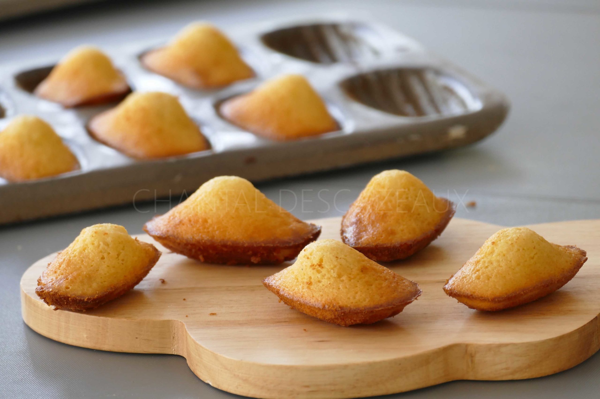

Madeleine recipe

Description
Take a step back into childhood with our recipe for Proust's madeleine. Moist and rich in butter, these madeleines are perfect with a cup of tea or hot chocolate.
Ingredients
- Flour
- Butter
- Eggs
- Sugar
- Milk
- Baking Powder
- Vanilla Extract
- Salt
- Almond powder
Steps
- Start by making a hazelnut butter (I promise, it's easy), and leave it to cool slightly before use.
- Mix the flour and yeast in one bowl, and all the other ingredients in another, starting with the eggs and sugar. Finally, add the dry ingredients to the wet ingredients and mix.
- Leave to rest in the fridge for at least 2 hours (ideally overnight).
- Divide the batter between the madeleine moulds and bake for 10 minutes, or until golden and puffed.